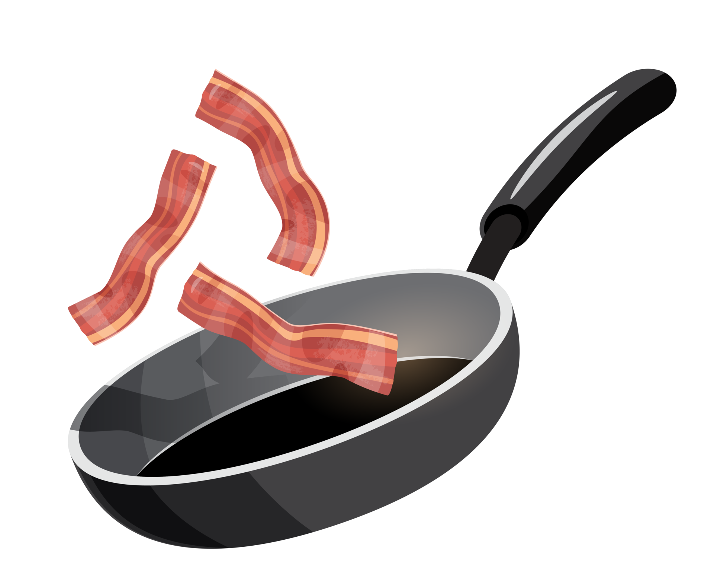
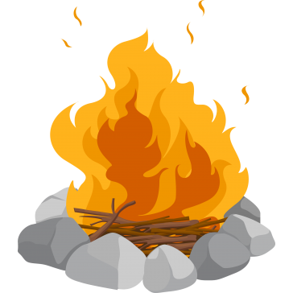
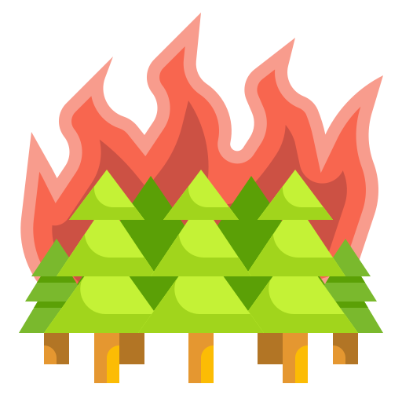

Cooked bacon: 0
Bacon per second: 0

0 Fire: 15 Cooked Bacon

0 Pan: 150 Cooked Bacon

0 Campfire: 1200 Cooked Bacon

0 Grill: 8000 Cooked Bacon

0 Factory: 60000 Cooked Bacon

0 Forest Fire: 400000 Cooked Bacon
0 Volcano: 7000000 Cooked Bacon

0 Earths core: 18000000 Cooked Bacon